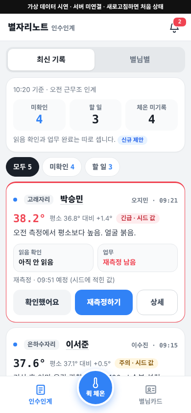
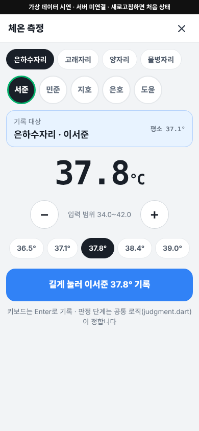
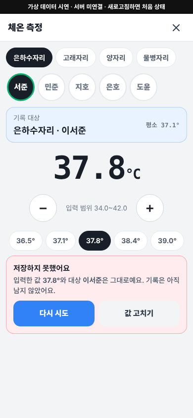
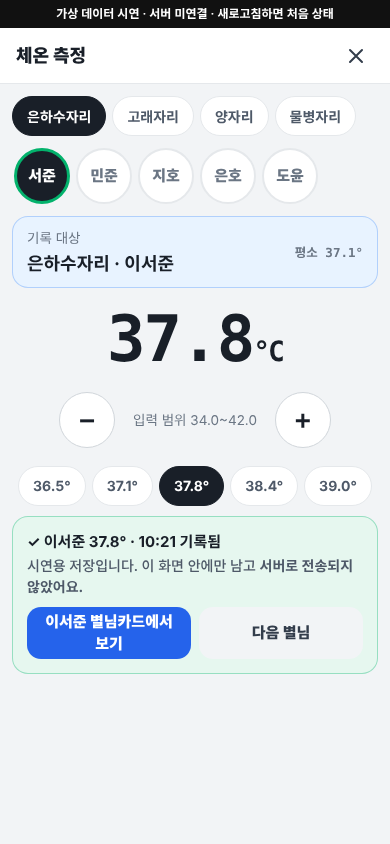
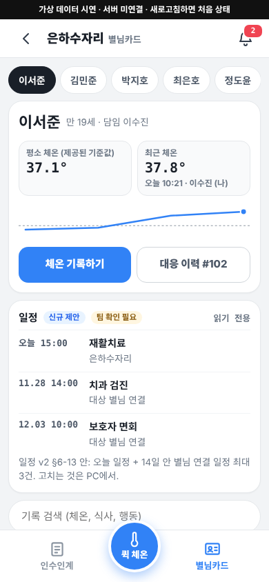
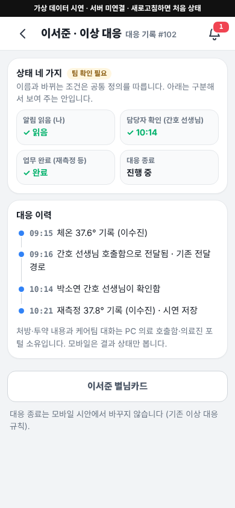

카카오 테크 포 임팩트 2조 “혜진아왜요쌤” · 조별 멘토링 2026-11-26
별자리노트 — 다섯 파트 통합본
울산 혜진원 생활관 선생님이 별님(거주인)의 체온 이상을 기록하면, 간호 선생님과 의료진, 사무국이 같은 기록을 이어서 보는 서비스입니다. 이 페이지는 다섯 담당의 화면 시안과 기능명세를 한곳에 모았습니다.
여기 있는 화면은 모두 가상 데이터로 만든 시안·명세입니다. 실제 서버(UNIST 내부망)와의 저장·동기화는 이 묶음에서 확인하지 않았습니다. 아래 “확인한 것과 못 한 것” 표를 함께 봐 주세요.
한 건의 체온이 흘러가는 길
① 어플 · 범수체온 기록생활관 선생님이 휴대폰으로 기록하고 저장 결과를 확인
② 현황판 · 진모시설 전체 상태사무국·수석 간호 선생님이 한 화면에서 확인
③ 메일함(간호 선생님) · 용태의료 호출함호출 확인, 케어팀 대화, 건강기록
④ 메일함(의료진) · 상문의료진 협진 포털호출 수신, 채팅, 진단·처방 작성
⑤ 일정 · 태안PC 캘린더재측정·진료·이상 건을 달력에서 읽고 별님 일정 연결
파트별 자료
모바일 앱 (생활관 선생님)
인수인계 → 별님 선택 → 퀵 체온 → 저장 결과 → 별님카드·아카이브. 저장 상태, 별님별 연결, 읽음 확인과 업무 완료 구분을 다듬었습니다.
통합 관제 현황판 (PC)
요약 카드, 거주인 현황 표, 생활관 타일, 라이브 타임라인. 현재 화면을 재현한 시안과 제안을 구분한 명세입니다.
PC 03 의료 호출함
호출함 목록 · 케어팀 대화 · 종합 건강기록 3단 화면의 디자인 명세(색·크기·상태)입니다. 이 묶음에는 화면 HTML이 없고 명세만 있습니다.
의료진 협진 포털
호출함(열린/끝낸 호출) · 별님별 채팅 · 비대면 진단서와 전자처방전 작성 화면입니다. 보내기·발행 버튼의 동작은 명세에 “확인 필요”로 적혀 있습니다.
PC 일정 페이지 v2
달력 중심 화면, 바로 넣기, 반복, 반·업무 켜고 끄기, 건강 자료를 읽어 오는 자동 캘린더, 별님 연결 일정. 모바일은 별님카드 안 표시와 알림까지만.
모바일 시안 미리 보기






확인한 것과 못 한 것
| 항목 | 상태 | 설명 |
|---|---|---|
| 모바일 시안 화면 시연 | 확인 | 브라우저에서 핵심 흐름 10가지를 자동 클릭으로 검수 (APP_통합메모 4장) |
| 네 PC 파트 시안·명세 | 담당자 자료 그대로 | 각 담당이 올린 파일을 내용 수정 없이 모았습니다. 확인 범위는 각 문서 머리말에 적혀 있습니다 |
| 모바일 시안의 실제 앱(Flutter) 반영 | 미완료 | 저장소 코드는 읽기만 했습니다 |
| 서버 저장 · 화면 간 동기화 | 미확인 | 팀 서버는 UNIST 내부망 전용이라 이 묶음을 만들 때 접속하지 못했습니다 |
| 휴대폰 설치 | 미완료 | 시도하지 않았습니다 |
통합 전에 팀이 정할 것
| # | 내용 | 관련 파트 |
|---|---|---|
| 1 | 발표·배포 기준 브랜치: v1.01(일정 탭 없음)과 main(일정 탭 있음)이 다릅니다 | 어플 · 통합 |
| 2 | “확인함 / 완료 / 호출 종료”의 뜻과 버튼별로 바뀌는 상태를 한 가지로 맞추기 | 어플 · 메일함 두 곳 · 현황판 |
| 3 | 구버전 앱이 저장하면 새 일정 항목(반복·취소·별님 연결)이 사라질 수 있는 문제 (일정 v2 §7-5) | 일정 · 통합 · 어플 |
| 4 | 별님카드에 일정을 어디까지 보여 줄지 (제목·메모의 민감한 내용) | 일정 · 어플 |
| 5 | 호출함의 “긴급” 표시와 현황판의 위험 건 이름 맞추기 | 현황판 · 메일함 |
실행 중인 버전
| 코드 저장소 | github.com/KimBeomsu01/byeoljari-note (main, v1.01) |
| 공개 시연판 (main) | kimbeomsu01.github.io/byeoljari-note — 가상 데이터, 기기 안 저장 |
| 기능 추가본 (팀 서버) | http://10.14.11.221:8093/pc · http://10.14.11.221:8093/doctor — UNIST 네트워크 안에서만 열립니다. 시연 계정은 발표자가 안내합니다 |